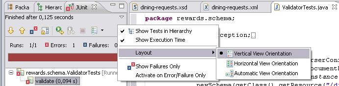

In this lab you will gain experience with using XML Schema and Object-XML mapping. You'll edit an XML schema to make it conform to a given XML document and will generate classes from that schema to use for (un)marshalling.
What you will learn:
Editing XML Schema;
Validating an XML document against a given schema using JAXP;
Generating classes from an XML schema using JAXB 2's xjc;
Unmarshal an XML file into instances of these classes;
Marshal instances of these classes into an XML file.
Specific subjects you will gain experience with:
XML Schema
JAXP
JAXB 2
Spring-OXM
Estimated time to complete: 45 minutes
The instructions for this lab are organized into sections. In the first section, you'll edit an XML schema and will ensure that a given XML document validates properly against it. In the second section you'll generate classes based on this schema and use these classes for marshalling and unmarshalling with JAXB 2. In the third section you'll use Spring-OXM to do the same thing with code that doesn't depend on the JAXB 2 API.
Before we start with writing the lab code, we'll first provide you with a bit of context.
The Reward Network application can be used by various remote clients to send dining requests to in order to have them processed. As you've seen earlier on in the course, there's a number of integration styles and representations that make this possible. To achieve loose coupling and to allow multiple types of clients to easily provide the necessary data to the Reward Network, using XML as an input format is an obvious choice. This can be combined with a synchronous or asynchronous process for processing the requests. In order to describe the format of the expected XML, we need to provide clients with an XML Schema. That's the first thing you'll do in this lab.
When we actually receive XML requests, we need to parse them so we can process them. Again, there's more than one way to do it, but a popular approach is to use an OXM framework to parse the XML into objects for you. That's what you'll you do in the second section: use JAXB2 to create some classes that represent the XML from a given Schema, so that instances of these classes can be created automatically when parsing a conforming XML document. You'll then transform these objects into regular Dining objects so that they can be processed by the RewardNetwork. (The actual processing is not part of this lab.)
In this section, you will finish a given XML schema and make sure that it can be used to validate a given XML document containing Dining requests.
In the advanced-xml project, open the dining-requests.xsd file under the src/main/resources source folder and switch to the 'Source' tab. Notice that it already defines a root element called <diningRequests>, which consists of a list of <dining> elements. It's your job to complete the definition of the DiningRequest type for each <dining> element. To see an example document that should be described by the schema, open the dining-requests.xml file under the src/test/resources source folder. Notice how a <dining> consists of a number of arguments.
Most of the data in this XML file is simply representing the state of the Dining class from the rewards project. What is extra is the transaction-id attribute on the <dining> element. This is needed in case of asynchronous processing: clients will receive a confirmation that their request has been processed in a later interaction with the system, so they need a way to uniquely identify the original request from the confirmation. For this purpose, we use a unique transaction ID created by the clients. Note that this means we cannot use the Dining class directly, unless we extend it with a transactionId attribute. However, the actual Dining class doesn't necessarily have to know about the fact that we're using it in an asynchronous process, which is why we rather create a dedicated class for the request. This also greatly reduces the effort we need to spend on getting the mapping between the schema and the classes right: we do not have to instruct the OX mapper how it should generate things like a SimpleDate or a MonetaryAmount used in the Dining, we'll take care of that ourselves.
To see if our schema is correct we have provided you with a test that validates the XML document against the schema. Open the ValidatorTests class in the rewards.schema package. This test uses the JAXP API to create a DocumentBuilder that tries to parse the XML while validating it. Validation errors will result in Exceptions that will cause the test to fail. Run the test and check the exception message to confirm that the schema needs to be updated.
![[Tip]](images/tip.png) | Tip |
|---|---|
By default the JUnit view will only show you a small part of the stacktrace when an exception occurs while running the tests. To better see the cause of the exception, you can fix the view orientation to "Vertical View Orientation" from the view's menu. |
|  |
| Tip |
|---|---|
You can then enlarge the view after it's shown to show the complete stacktrace; the JUnit view is predefined as a Fast View by the custom Training perspective, so the view will automatically pop up when you run a failed test and will automatically minimize again after you click outside of the view in your workspace. |
In the schema, you will see two TODOs. Finish TODO 01 by creating an element definition for the merchant element. This is very similar to the creditcard element, so use that as a basis and check the XML document to see the required attribute. After adding the element definition, run the test again. You should now see an error similar to this:
org.xml.sax.SAXParseException: cvc-complex-type.2.4.d: Invalid content was found starting with element 'timestamp'. No child element is expected at this point.
To fix this error as well, finish TODO 02 by adding an element definition for the timestamp element. Use the given Timestamp type for the element: because this is not a built-in type, you'll have to prefix the type name with the prefix defined for our namespace, which is "dining:". Run the test again and make sure there are no more errors. When everything is working OK, move to the next step!
We now have an XML Schema that we can give to our clients to show them what XML they can send to our Reward Network application. The ValidatorTests showed how you can parse such an XML document into an instance of org.w3c.dom.Document. However, it's often a lot easier to work with domain classes instead of with the raw DOM tree. JAXB 2 is a popular OXM solution that will let you generate classes based on a schema and vice-versa, so you can then marshal and unmarshal objects to and from XML documents.
JAXB 2 has a tool called xjc which can generate classes based on a schema. One of the ways to run it is as a Maven plugin.
In this lab we use JAXB2 to convert between Objects and XML. So the first step is to generate the classes out of your previously created XML Schema with xjc, the JAXB2 compiler. You will find an Ant buildfile for this in the root of the project with the name create-classes.xml. Right click on it and select "Run As/Ant Build". After refreshing the project (select the project and press F5) you will see the generated classes in the package rewards.request.
You will now have a handful of updated classes in the rewards.request package in the generated source folder. Briefly inspect their contents, and pay attention to the annotations that xjc has put in place: a different approach to working with JAXB 2 is to write classes with these annotations and to then generate a schema!
We'll now use the JAXB 2 API to unmarshal an existing XML file into an object graph based on our generated classes.
We're using a DiningRequest converter to convert between the generated classes and our domain objects. Since you have finished the schema the conversion needs to be enhanced too. Perform all TODO 03 tasks in DiningRequestConverter, don't hesitate to compare with the solution if you're unsure.
Open the Jaxb2RequestProcessor class. This class is used to unmarshal XML into a List<Dining>. This XML is represented as an instance of javax.xml.transform.Source, which is a standard representation for things that XML can be read from. All XML libraries know how to deal with it, including JAXB 2.
Implement TODO 04 by finishing the unmarshalDiningRequests method using the sample code from the presentation. Note that unmarshalling results in a DiningRequests object, not a List<Dining>. You're in luck, we've already provided you with an easy conversion helper method that's part of the superclass, so use that to return the expected type.
| Tip |
|---|---|
To easily see what methods are available from the superclass, just create a new line and type CTRL-SPACE. |
To check whether your unmarshalling works, open the Jaxb2RequestProcessorTests class. As you can see, this class doesn't do much by itself, so also open its superclass. Notice how the parseRequests method creates a Source from the dining-requests.xml file you looked at earlier. This Source is then passed to the unmarshalDiningRequests method you just completed in the previous step and the resulting list of dinings is checked to contain the right data.
Now run the Jaxb2RequestProcessorTests. The actual tests are in the superclass you just saw. There are two tests: one for unmarshalling and one for marshalling. The latter will fail as you haven't implemented that yet, but make sure that the parseRequests test succeeds.
In many cases you don't just want to parse XML documents to create an object graph, you want to generate XML from objects as well. For example, you could use this approach when implementing a Java-based client for the Reward Network. That's what you'll do next.
Switch back to the Jaxb2RequestProcessor class. Now implement TODO 05 by finishing the marshalDiningRequests method.
![[Note]](images/note.png) | Note |
|---|---|
We want the output to be formatted, instead of just a single line of XML. In order to get this behavior, set the "jaxb.formatted.output" property on the Marshaller to Boolean.TRUE before calling the marshal method. |
First review the AbstractRequestProcessorTest.writeDinings() test to see how it checks if your marshalDiningRequests method implementation works as expected: it simply compares the result of marshalling two dinings to a String with the contents of an existing marshalled-dinings.xml file. For this lab, that's enough to fit our purposes. For more generic testing of XML semantic equality (for which String equality isn't well suited), you can use a library like XMLUnit instead. Now run Jaxb2RequestProcessorTests again: this time both tests should pass. Make sure your code works and then proceed with the next step!
Working with the JAXB 2 API is not that hard, but if we ever decide to switch to another OXM tool (for reasons of performance or better mapping functionality, for example) we have to change a lot of code. With Spring-OXM, you can use a common abstraction over the various OX mappers that will allow you to write code that's not dependent on a specific tool. This section will show you how to do that.
Open the OxmRequestProcessor class. This class has already been implemented for you: notice how the class uses dependency injection to obtain a Marshaller and Unmarshaller and how the actual (un)marshalling is now just a single method call. The interesting part is how to set up those (un)marshallers. This is done in OxmRequestProcessorTests. Open this test class.
Implement the createMarshaller method by creating and configuring a Spring-OXM Jaxb2Marshaller (TODO 06). Use the XML sample from the slides to determine what code you need to write: we're not using Spring for dependency injection in our test, so we use straight Java code instead of XML to create the marshaller. Set the contextPath property to the package name that contains your generated classes and set the marshallerProperties property using a Map with the same property you set in step 8;
| Tip |
|---|---|
To create a Map with a single entry, use the following code (Collections is in java.util):
|
Call the afterPropertiesSet method before returning the Jaxb2Marshaller, as we're not using Spring (that would call it for us automatically). Simply rethrow the resulting Exception as a RuntimeException. Note that you've basically specified the same properties as we used in the Jaxb2RequestProcessor.marshalDiningRequests() method, but now the code has no more JAXB 2 dependencies!
Now run the test and make sure that both test methods pass.
When the test runs successfully, you have completed the lab!